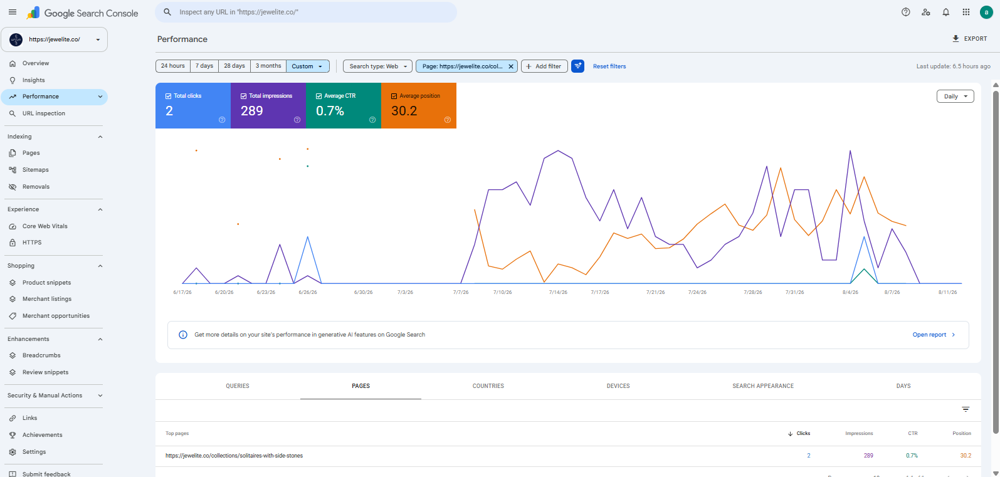
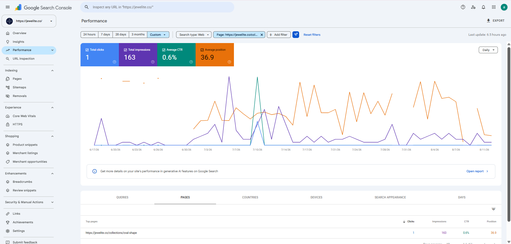
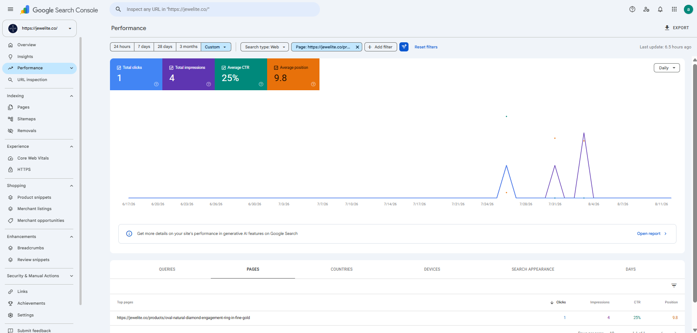
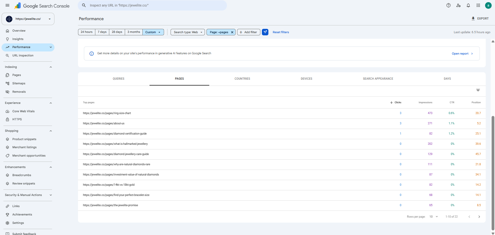
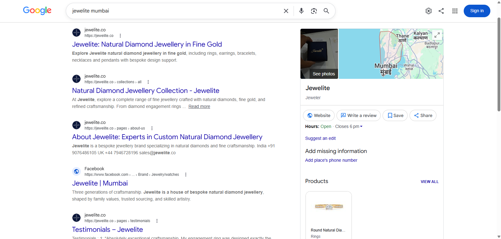
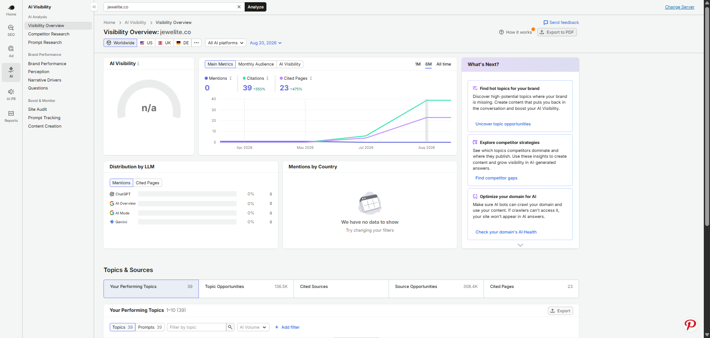
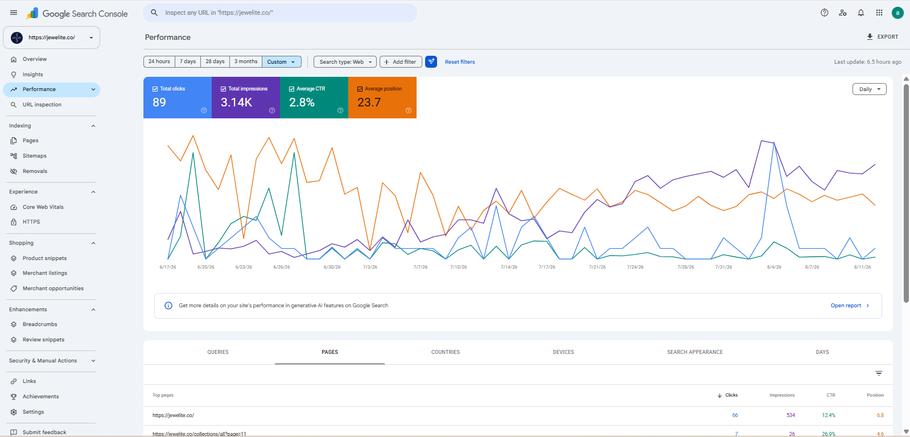
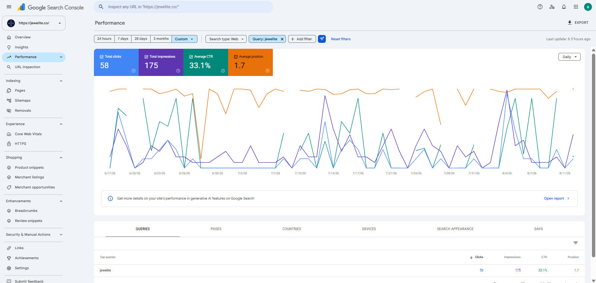
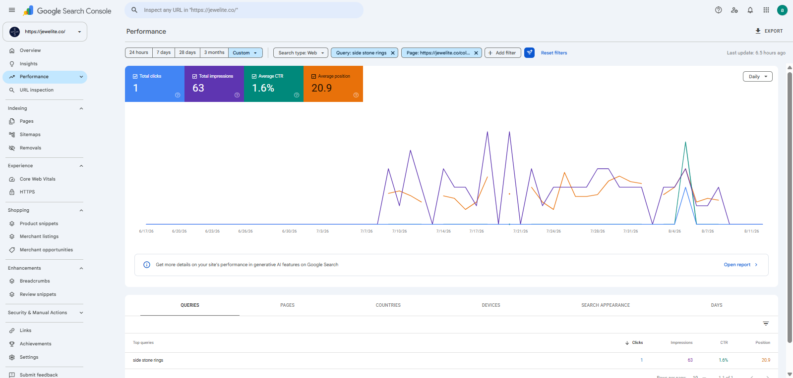
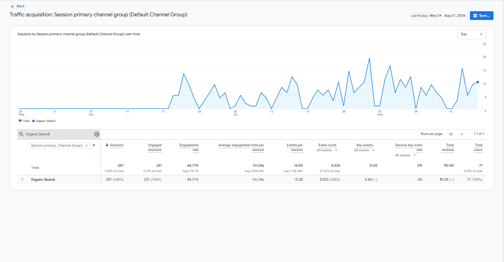

The Starting Point
Jewelite did not have an old SEO strategy that needed repairing. It barely had an SEO strategy at all.
The website was visually live, but many important pages contained very little useful search-focused content beyond jewellery imagery and product listings.
At the same time, Jewelite was entering one of the most competitive ecommerce search categories: natural diamond jewellery.
As a completely new domain, the site had:
- No established search authority
- No meaningful ranking history
- Almost no backlink profile
- Limited brand awareness
- Weak search-engine trust
- Very little SEO-focused content
- Generic Shopify structured data
- Technical issues that needed to be handled early
The challenge therefore was not simply:
It was:
The Initial SEO Problems
The website needed work across nearly every major SEO layer.
Technical SEO
- Crawling
- Indexing
- Sitemap
- Robots.txt
- Canonicals
- Redirects
- Core Web Vitals
- Mobile speed
- Heading hierarchy
- Image optimization
- Product URL structure
- Structured data
One of the most important issues was that product URLs used non-descriptive numerical slugs, creating a weak long-term URL structure.
On-Page SEO
- Very little SEO-focused page content
- Weak keyword targeting
- Limited metadata optimization
- Minimal internal linking
- Generic page structures
- Product names with limited search differentiation
- Collections functioning mainly as product grids
- No clear page-level keyword architecture
Content
Jewelite did not have a mature blog or informational-content strategy to clean up. The larger issue was that useful search-focused content needed to be created.
- Natural diamonds
- Certification
- Hallmarking
- Diamond shapes
- Ring sizing
- Bracelet sizing
- Jewellery care
- Gold purity
- Engagement decisions
- Product buying questions
This informational layer also needed to support the commercial side of the website.
Off-Page SEO
As a new domain, Jewelite had almost no backlink profile. The initial authority strategy therefore needed to begin carefully.
The goal was not backlink volume. It was to establish the first relevant external signals while the website built its own search history.
My Role
I own Jewelite's SEO strategy end to end.
My responsibilities include:
- SEO strategy
- Technical audits
- Keyword research
- Competitor research
- Website architecture
- Homepage SEO
- Collection-page SEO
- Diamond-shape landing pages
- Product SEO
- Education-page strategy
- Content planning
- Internal linking
- Metadata
- Schema creation
- Local SEO
- AI-search optimization
- Developer coordination
- Content-writer direction
- Designer and UX coordination
- Monthly SEO reporting
The project team includes:
SEO Lead
Me
Content
1 Content Writer
Development
2 Developers
Design
1 Designer
I decide the SEO priorities and coordinate with the team to execute technical, content, and UX improvements.
Starting With the Technical Foundation
Because Jewelite was a new website, I wanted technical problems solved before the site accumulated more pages and search history.
The initial execution sequence was:
The technical review covered:
- Crawlability
- Indexability
- XML sitemap
- Robots.txt
- Canonicals
- Redirects
- Core Web Vitals
- Mobile performance
- Heading hierarchy
- Image optimization
- Product URL structure
- Structured data
The objective was to create a cleaner foundation before scaling the website's commercial and informational SEO.
Positioning Jewelite Around Natural Diamond Jewellery
One of the first strategic decisions was defining what Jewelite should represent in search.
The core positioning became:
Primary Keyword
- Natural Diamond Jewellery
Secondary Keywords
- Natural Diamond Engagement Rings
- Custom Diamond Jewellery
Supporting content across the site reinforces:
- Natural diamonds
- Fine gold
- Customisation
- Craftsmanship
- Diamond expertise
- Certification
- Hallmarking
The objective was to make Jewelite's identity clear to both search engines and users from the beginning.
The live website now prominently organizes discovery around natural diamond rings, categories, diamond shapes, bespoke jewellery, and education content.
Building Trust Into the SEO Strategy
Natural diamond jewellery is a high-consideration purchase. Search visibility alone is not enough.
Users also need confidence in:
- Diamond authenticity
- Certification
- Gold quality
- Craftsmanship
- Business credibility
- Policies
- Product knowledge
I therefore made sure important SEO pages also incorporated relevant trust information around:
Product Trust
Natural diamond authenticity, GIA-certified quality information, BIS hallmark information, gold purity.
Expertise
75 years of diamond knowledge, founder and family expertise, craftsmanship, customisation.
Education
Jewellery care, size guides, certification, hallmarking and diamond education.
Business Clarity
About Us, shipping, returns, exchanges, buyback, contact and business information.
These were not treated as disconnected branding elements. They became part of how the website communicated expertise, trust, and entity clarity.
Understanding the Competitive Search Market
Because Jewelite had very little historical search data, competitor research played an important role.
I studied established jewellery brands including:
- Tanishq
- Miscaro
- Angara
- CaratLane
- BlueStone
- Joyalukkas
- ORRA
- Kalyan Jewellers
I analyzed:
- Homepage positioning
- Collection architecture
- Diamond-shape pages
- Product names
- Product descriptions
- Engagement pages
- Education content
- Metadata
- Internal linking
- FAQs
- Trust signals
- Structured data
- Ranking keywords
The purpose was not to reproduce competitor pages. It was to understand what users search for, how strong jewellery websites structure those searches, and where Jewelite could create clearer or more useful pages.
Building the Keyword Strategy From Zero
Without meaningful historical Google Search Console data, I used:
- Semrush
- Ubersuggest
- Google SERPs
- Competitor rankings
- Search intent
The website was then divided into several keyword layers.
Homepage
- Natural Diamond Jewellery
Main Collections
- Diamond Solitaire Rings
- Diamond Pendants
- Diamond Necklaces
- Diamond Bracelets
- Diamond Earrings
- Diamond Rings
- Diamond Halo Rings
- Side Stone Engagement Rings
- Eternity Rings
- Toi et Moi Rings
- Diamond Studs
- Diamond Hoop Earrings
- Diamond Drop Earrings
Diamond-Shape Pages
- Round Diamond Jewellery
- Oval Diamond Shape
- Princess Cut Diamond Jewellery
- Emerald Cut Diamond Jewellery
- Radiant Cut Diamond Jewellery
- Pear Shaped Diamond Jewellery
- Heart Shape Diamond Jewellery
- Asscher Cut Diamond Jewellery
- Marquise Shape Diamond Jewellery
Product Pages
Where relevant, additional engagement or design intent is used to distinguish similar products. This hierarchy helped give different page types clearer search roles and reduced the risk of dozens of pages competing for identical terms.
Rebuilding the Homepage Around Search Intent
The homepage was not simply refreshed. Most of its SEO content needed to be built.
- H1 and H2 structure
- Primary keyword targeting
- Metadata
- Collection links
- Diamond-shape links
- FAQs
- Trust content
- Internal linking
- Calls to action
- Structured data
- Image alt text
The content was developed using keyword research, competitor analysis, and the perspective of an actual jewellery shopper.
The live homepage now combines product discovery with category navigation, nine diamond shapes, the Jewelite Promise, FAQs, consultation/customisation content, and education resources.
Turning Collections Into Search Landing Pages
Many collection pages originally functioned mainly as product grids.
I developed a more complete SEO structure around:
- H1
- Product Grid
- SEO-Focused Content
- Buying Guidance
- FAQs
- Related Category Links
- Contextual Internal Links
Across approximately:
14 Collection Pages
I personally worked on keyword mapping, collection content, heading hierarchy, metadata, FAQs, internal linking, image optimization, and schema recommendations.
The objective was to make each important collection useful as a commercial search landing page rather than simply a catalogue view.
Early Collection Visibility
One early example was:
Solitaires With Side Stones
Clicks
2
Impressions
289
CTR
0.7%
Average Position
30.2
The numbers are still early. I do not treat this as mature SEO performance.
What matters is that a commercial collection on a new domain had started gaining non-branded visibility.

Creating Diamond-Shape Search Architecture
Diamond shape is one of the major ways users discover and evaluate jewellery.
Instead of relying only on broad categories such as Rings or Earrings, Jewelite also uses dedicated landing pages for:
- Round
- Oval
- Princess
- Emerald
- Radiant
- Pear
- Heart
- Asscher
- Marquise
These pages support both search intent and product discovery.
Preventing Shape-Page Duplication
Nine shape pages can easily become nine near-identical pages. That would create weak differentiation.
Instead, each shape page uses its own keyword focus and relevant page relationships.
Shape pages connect with:
This gives each page a clearer reason to exist while strengthening the wider site's diamond-shape architecture.
Early Shape-Page Visibility
One early example was:
Oval Shape
Clicks
1
Impressions
163
CTR
0.6%
Average Position
36.9
Again, these are early-stage figures rather than a mature ranking result. What they show is that the new shape architecture had begun entering search.

Building Product SEO at Scale
Jewelite's product catalogue introduced another challenge. Many fine-jewellery products naturally share diamond shapes, settings, jewellery types, gold options, and design characteristics.
Without careful naming, product pages could become repetitive.
I developed product naming around:
Examples included:
- Marquise Cut Diamond Ring with U Cut Pave in Fine Gold
- Cushion Cut Diamond Stud Earrings in Fine Gold
- Natural Round Shape Diamond Necklace in Fine Gold
Additional intent such as engagement or design style is used where it helps distinguish similar products.
Optimizing Product Pages
I have personally optimized approximately:
70 Product Pages
The process includes:
- SEO-focused product name and H1
- Product description
- Meta title
- Meta description
- Image alt text
- Internal links
- Product structured data
- Related products or categories
Descriptions combine search relevance, jewellery details, natural diamond positioning, fine gold information, occasion or use, and related jewellery discovery.
Early Product Search Visibility
One early product example was:
Oval Natural Diamond Engagement Ring in Fine Gold
Clicks
1
Impressions
4
CTR
25%
Average Position
9.8
The dataset is extremely small. For that reason, I treat this only as an early visibility signal rather than a proven ranking win.

Rebuilding the Product URL Structure
One of the most significant technical changes involved product URLs.
The initial URLs used non-descriptive numerical slugs such as:
I developed descriptive product URLs instead. For example:
This change was implemented across approximately:
70 Product URLs
Changing live URLs incorrectly can create broken pages, lost links, duplicate URLs, redirect problems, and lost search signals.
So the migration process also included:
This became one of the project's most important technical SEO changes.
Solving Crawling and Indexing Problems
Some pages initially appeared in Google Search Console under:
- Crawled, currently not indexed
- Discovered, currently not indexed
Rather than treating indexing as a standalone Search Console problem, I worked on the pages themselves.
- Adding useful content
- Improving keyword targeting
- Building stronger internal links
- Improving page relationships
- Fixing technical signals
As these improvements were implemented, index coverage increased.
170 Indexed Pages
Internal linking was especially useful in helping search engines discover deeper products, collections, shape pages, and education pages.
Improving Technical SEO
Sitemap
Unnecessary URLs were removed.
Canonicals
Canonical implementation was added where missing.
Redirects
Old product URLs were mapped through 301 redirects after the migration.
Core Web Vitals
Performance issues were identified and improved with the development team.
Mobile Speed
Mobile performance became an important priority.
Heading Hierarchy
Incorrect heading structures were corrected.
Image Optimization
Images were improved for both search and performance.
The objective was to create a cleaner technical foundation before the website accumulated more years of search history.
Building a Custom Structured Data Strategy
Shopify's default structured data was too generic for the page architecture I wanted to establish.
I created more page-specific schema recommendations and coordinated implementation with developers.
Homepage
Organization · WebSite · FAQ · Breadcrumb
Collection Pages
Collection · ItemList · FAQ · Breadcrumb
Product Pages
Product · Offer · Breadcrumb
Education Pages
FAQ · Breadcrumb
Structured data was then validated using Google's Rich Results Test.
Building Education SEO Instead of a Traditional Blog
Jewelite does not currently rely on a traditional blog-first SEO strategy.
Instead, informational search intent is being developed through dedicated education pages.
This supports customer education, search visibility, topical relevance, trust, conversion support, and AI-search accessibility.
Education topics include:
- Diamond Certification
- The 4Cs
- Hallmarked Jewellery
- Diamond Jewellery Care
- Diamond Shapes
- Ring Size
- Bracelet Size
- Gold Purity
- Natural Diamond Education
Keyword volume and competition are considered when deciding which topics to prioritize.
Connecting Education With Commercial SEO
Education content is not isolated from the store.
The internal-linking model connects:
Education Pages
Collections & Products
This gives informational users a natural path toward commercial pages while also helping search engines understand the relationship between Jewelite's expertise and products.
Early Education Visibility
Approximately:
12 Education Pages
have been created or optimized.
Ring Size Chart
3 clicks · 473 impressions · 0.6% CTR · 20.7 position
Diamond Certification Guide
1 click · 82 impressions · 1.2% CTR · 25.1 position
What Is Hallmarked Jewellery?
202 impressions · 39.6 position
Diamond Jewellery Care Guide
129 impressions · 45.7 position
These pages are still early in their ranking lifecycle. The important point is that the informational architecture has begun building visibility.

Building a Strong Internal Linking Structure
Because I took ownership shortly after launch, I was able to design the internal-linking structure before the website became significantly larger.
Homepage
Collections
Shape Pages
Products
Education
Relevant collection keywords are used as anchors where they naturally fit. Different variations are used to avoid excessive repetition or over-optimization.
This structure also supports discovery and indexing across deeper pages.
Building Local SEO From Zero
Jewelite's Google Business Profile was also created and optimized as part of the initial foundation.
The objective was to establish:
- Brand identity
- Business information
- Local trust
- Branded search visibility
As the website became indexed and branded search activity developed, the Business Profile also began appearing more consistently for relevant brand searches.
Local SEO remains an ongoing area rather than a completed campaign.

Building an Initial Backlink Profile
Because Jewelite is still a new domain, off-page SEO remains in the foundation stage.
Approximately:
5–6 Initial Backlinks
were created through websites within the broader business ecosystem, including properties such as Earthly Jewels, Tinyfacets, and IQONIC Design.
Early anchor-text work focused primarily on brand establishment, homepage relevance, and main natural-diamond positioning.
The objective is not to chase backlink volume. It is to establish the first relevant authority signals while the website develops its own search history.
Preparing Jewelite for AI Search
AI-search accessibility was included from the beginning.
The strategy includes:
- AI crawler accessibility
- Structured data
- FAQs
- Concise answer-focused sections
- Education content
- Clear brand/entity information
- Natural diamond information
- Structured headings
According to third-party Semrush AI Visibility reporting:
- 0 AI Mentions
- 39 AI Citations
- 23 Cited Pages
- AI Visibility: n/a
These are third-party AI visibility figures rather than Google Search Console measurements. The report currently shows no measured brand mentions, while citations and cited pages have started appearing.
For a new domain, I treat these as early visibility signals rather than mature AI-search performance.

Overall SEO Results
Jewelite is still in the early stage of organic growth. This case study is therefore not intended to present mature traffic numbers.
It shows how quickly a complete search foundation was established.
Within the first few months, Google Search Console recorded:
Organic Clicks
89
Search Impressions
3.14K
CTR
2.8%
Average Position
23.7
Additional SEO Footprint
- 170 Indexed Pages
- 428 Ranking Keywords Reported
- 400+ Non-Branded Keywords Showing Visibility
- 71 Organic Users
The four Search Console metrics above are directly supported by the supplied GSC screenshot. Indexed pages, reported ranking-keyword footprint, non-branded keyword visibility, and Organic Search users are additional project metrics tracked separately.

Establishing the Brand Query
For:
“jewelite”
Google Search Console recorded:
Clicks
58
Impressions
175
CTR
33.1%
Average Position
1.7
This showed that Jewelite's primary brand property became clearly established relatively early.

Building Non-Branded Visibility
The more important long-term objective is helping Jewelite reach people who have never searched for the brand before.
One early example was:
“side stone rings”
Clicks
1
Impressions
63
CTR
1.6%
Average Position
20.9
This is not yet a strong ranking. What makes it useful is that Google has begun testing the domain around a broader commercial jewellery term.
The related Solitaires With Side Stones collection also generated 289 impressions and began developing its own non-branded search footprint.

Pages Starting From Zero
Because the entire domain was new, almost every URL effectively began with no organic visibility.
Pages such as the:
Ring Size Chart
have started gaining search visibility after the education architecture, content, technical SEO, and internal-linking work were introduced.
The live ring-size page now contains a dedicated Indian ring-size chart, measurement instructions, and supporting guidance rather than functioning as a thin utility page.
The education section remains one of the areas I expect to become increasingly important as the domain develops more authority.
Business Impact
Organic search has already contributed to business performance.
However, sales and conversion figures are confidential and are intentionally excluded from this portfolio.
Proof of Work
The strongest proof is placed directly beside the claim it supports throughout the case study. This section acts as a compact evidence recap rather than repeating every screenshot again.
Organic Search Traffic
Sessions
357
Engaged Sessions
231
Engagement Rate
64.71%
Avg. Engagement Time / Session
1m 24s
Events / Session
15.50
Total Users
71

This makes the early-stage SEO story directly verifiable rather than relying only on written claims.
Tools & Platforms Used
- Google Search Console
- Google Analytics
- Semrush
- Ubersuggest
- Screaming Frog
- PageSpeed Insights
- Google Rich Results Test
- Google Business Profile
- Shopify
The Most Difficult Part
The most technically sensitive part of the project was rebuilding the product URL structure.
Changing approximately 70 live product URLs was not simply a matter of adding keywords to slugs.
Every URL change needed to preserve the path between the old and new page.
The workflow required:
If handled incorrectly, this could have created:
- Broken URLs
- Duplicate pages
- Redirect problems
- Lost search signals
- Poor internal links
Handled correctly, it created a much cleaner long-term product URL structure before the domain accumulated years of SEO history.
What I Learned
Jewelite taught me that a website does not need to arrive with an established SEO foundation for me to begin building one.
That gave me experience working at a much earlier SEO stage than simply optimizing an established website.
My Biggest Takeaway
Jewelite started as a visually live natural-diamond store with very little search infrastructure behind it.
My role has been to build that missing layer.
From keyword research and content architecture to technical SEO, product URLs, collections, diamond-shape pages, education content, schema, internal linking, Local SEO, and AI-search accessibility, the project required SEO to be created almost from the ground up.
The project is still early. That is exactly why it is useful in my portfolio.
It demonstrates that I do not need to inherit a mature SEO system before I can create a strategy.
Take a live website with minimal search infrastructure, build the SEO foundation end to end, coordinate execution across development, content, and design, and turn it into a structured search ecosystem that is beginning to gain both branded and non-branded visibility.